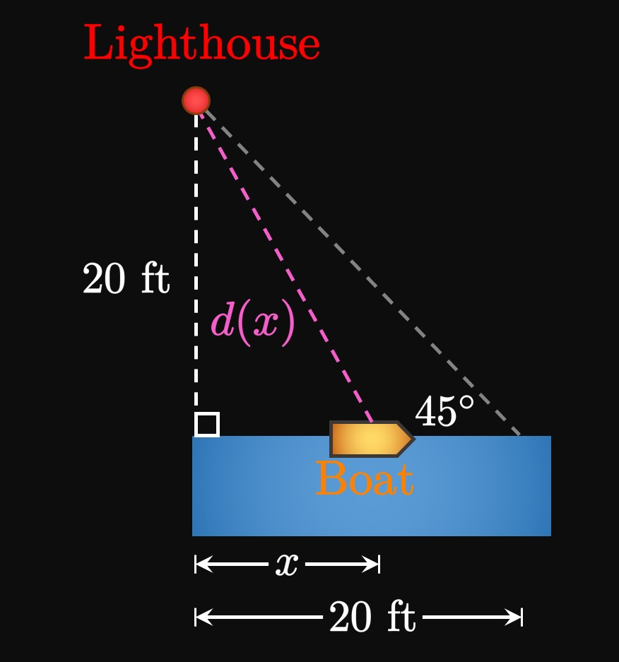
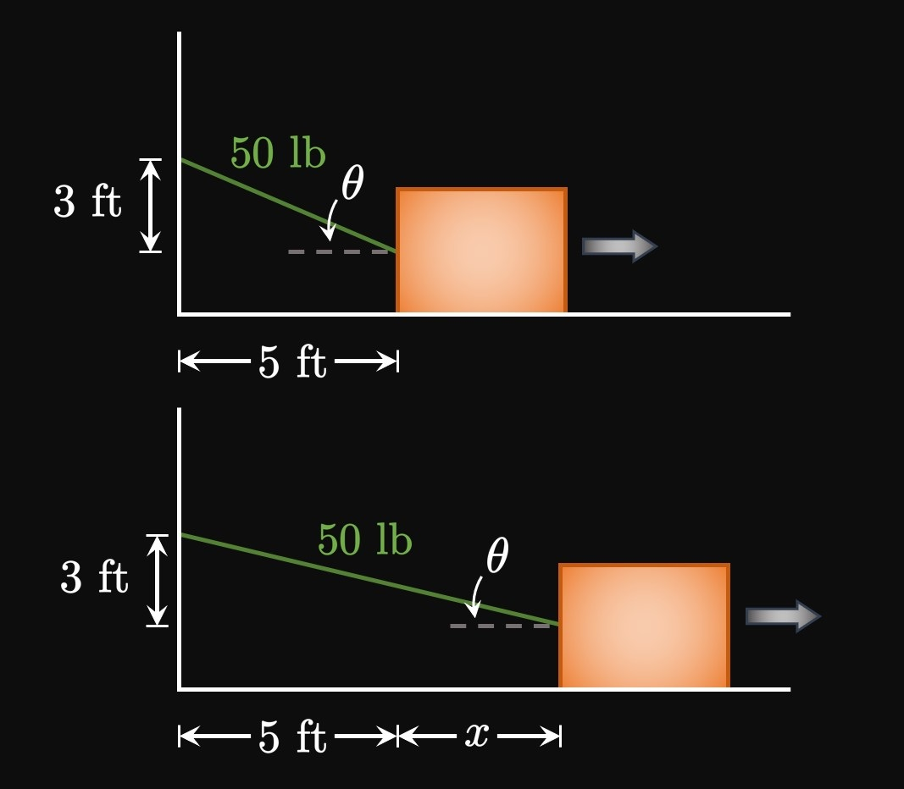

evaluate the integral using a trigonometric substitution.
SOLUTION
To remove the root sign, we substitute \(x = 3 \sin \theta:\)
\[
\ba
\sqrt{9 - x^2} &= \sqrt{9 - (3 \sin \theta)^2} \nl
&= 3 \sqrt{1 - \sin^2 \theta} \nl
&= 3 \abs{\cos \theta} \pd
\ea
\]
Then \(\dd x = 3 \cos \theta \di \theta,\)
and the integral becomes
\[\int 3 \abs{\cos \theta} \cdot 3 \cos \theta \di \theta \pd \]
Since we're working with an indefinite integral,
we drop the absolute value bars for convenience.
Thus, we have
\[
\ba
9 \int \cos^2 \theta \di \theta
&= 9 \int \frac{1}{2}(1 + \cos 2 \theta) \di \theta \nl
&= \frac{9}{2} \theta + \frac{9}{4} \sin 2 \theta + C \nl
&= \frac{9}{2} \theta + \frac{9}{2} \sin \theta \cos \theta + C \pd
\ea
\]
We now convert this answer to be in terms of \(x.\)
Construct a right triangle for reference.
Since \(x = 3 \sin \theta,\) it follows that \(\sin \theta = x/3.\)
This triangle has a hypotenuse of length \(3\)
and an angle \(\theta\) whose opposite side has length \(x.\)
Consequently, the side adjacent to \(\theta\) has length \(\sqrt{3^2 - x^2} = \sqrt{9 - x^2}.\)
Then \(\cos \theta = \sqrt{9 - x^2}/3\) and \(\theta = \sin^{-1}(x/3).\)
Our final answer is then
\[\boxed{\frac{9}{2} \sin^{-1} \par{\frac{x}{3}} + \frac{x \sqrt{9 - x^2}}{2} + C} \]
EXERCISE 5
For
\[\ds \int_0^{1/2} \frac{x^2}{\sqrt{1 - x^2}} \di x \]
evaluate the integral using a trigonometric substitution.
SOLUTION
We substitute \(x = \sin \theta\) to remove the root sign, since
\[\sqrt{1 - \sin^2 \theta} = \abs{\cos \theta} \pd\]
Then \(\dd x = \cos \theta \tan \theta \di \theta.\)
We now change the bounds:
When \(x = 0,\) we have
\[0 = \sin \theta \implies \theta = 0 \pd\]
Likewise, when \(x = 1/2,\) we have
\[\frac{1}{2} = \sin \theta \implies \theta = \frac{\pi}{6} \pd\]
Therefore, our new integral is
\[\int_0^{\pi/6} \frac{\sin^2 \theta}{\abs{\cos \theta}} \, \cos \theta \di \theta \pd \]
For \(0 \lt \theta \lt \pi/6,\) \(\cos \theta \gt 0.\)
Therefore, on this interval, \(\abs{\cos \theta} = \cos \theta.\)
Consequently, we drop the absolute value bars on \(\abs{\cos \theta}\) because they are superfluous.
We then have
\[
\ba
\int_0^{\pi/6} \sin^2 \theta \di \theta
&= \int_0^{\pi/6} \frac{1}{2}(1 - \cos 2 \theta) \di \theta \nl
&= \par{\frac{1}{2} \theta - \frac{1}{4} \sin 2 \theta} \Big|_0^{\pi/6} \nl
&= \par{\frac{1}{2} \cdot \frac{\pi}{6} - \frac{1}{4} \sin \frac{\pi}{3}}
- \par{0 - \frac{1}{4} \sin 0} \nl
&= \boxed{\frac{\pi}{12} - \frac{\sqrt 3}{8}} \nl
\ea
\]
evaluate the integral using a trigonometric substitution.
SOLUTION
We substitute \(x = \frac{1}{4} \sec \theta\) to remove the root sign in the numerator:
\[\sqrt{16 \par{\frac{1}{4} \sec \theta}^2 - 1} = \sqrt{\sec^2 \theta - 1} = \abs{\tan \theta} \pd\]
As a result, \(\dd x = \frac{1}{4} \sec \theta \tan \theta \di \theta.\)
Now let's consider the bounds:
The lower bound, \(x = -1/2,\) gives
\[-\frac{1}{2} = \frac{1}{4} \sec \theta \implies \theta = \frac{2 \pi}{3} \pd\]
Additionally, the upper bound, \(x = -1/4,\) yields
\[-\frac{1}{4} = \frac{1}{4} \sec \theta \implies \theta = \pi \pd\]
Our new integral is
\[\int_{2 \pi/3}^{\pi} \frac{\abs{\tan \theta}}{2 \par{\frac{1}{4} \sec \theta}}
\cdot \frac{1}{4} \sec \theta \tan \theta \di \theta \pd\]
For \(2 \pi/3 \lt \theta \lt \pi, \tan \theta \lt 0.\)
Therefore, \(\abs{\tan \theta} = - \tan \theta\) on this interval.
Substituting in this new expression, we obtain
\[
\ba
- \frac{1}{2} \int_{2 \pi/3}^{\pi} \tan^2 \theta \di \theta
&= - \frac{1}{2} \int_{2 \pi/3}^{\pi} \sec^2 \theta - 1 \di \theta \nl
&= - \frac{1}{2} \par{\tan \theta - \theta} \Big|_{2 \pi/3}^{\pi} \nl
&= - \frac{1}{2} \par{\tan \pi - \pi} + \frac{1}{2} \par{\tan \par{\frac{2 \pi}{3}} - \frac{2 \pi}{3} } \nl
&= \boxed{\frac{\pi}{6} - \frac{\sqrt 3}{2}}
\ea
\]
EXERCISE 7
For
\[\ds \int \frac{1}{x \sqrt{x^2 - 25}} \di x\]
evaluate the integral using a trigonometric substitution.
SOLUTION
We let \(x = 5 \sec \theta\) to clear the root sign in the denominator:
\[\sqrt{(5 \sec \theta)^2 - 25} = 5 \sqrt{\sec^2 \theta - 1} = 5 \abs{\tan \theta} \pd\]
Moreover, \(\dd x = 5 \sec \theta \tan \theta \di \theta.\)
Thus, the new integral is
\[\int \frac{1}{(5 \sec \theta)(5 \abs{\tan \theta})} \, 5 \sec \theta \tan \theta \di \theta \pd\]
As usual, we ignore the absolute value bars of \(\abs{\tan \theta}\)
because we have an indefinite integral.
Accordingly, the integral becomes
\[
\frac{1}{5} \int \di \theta = \frac{1}{5} \theta + C \pd
\]
Because \(x = 5 \sec \theta,\) it follows that \(\theta = \sec^{-1}(x/5).\)
Therefore, our final answer is
\[\boxed{\frac{1}{5} \sec^{-1} \frac{x}{5} + C}\]
evaluate the integral using a trigonometric substitution.
SOLUTION
To clear the root sign in the denominator, we let \(x = \frac{3}{2} \tan \theta:\)
\[\sqrt{4 \par{\frac{3}{2} \tan \theta}^2 + 9} = 3 \sqrt{\tan^2 \theta + 1} = 3 \abs{\sec \theta} \pd\]
Also, \(\dd x = \frac{3}{2} \sec^2 \theta \di \theta.\)
We now change the integral's bounds:
When \(x = 3 \sqrt 3 /2,\) we have
\[\frac{3 \sqrt 3}{2} = \frac{3}{2} \tan \theta \implies \theta = \frac{\pi}{3} \pd\]
Likewise, when \(x = 3/2,\) we have
\[\frac{3}{2} = \frac{3}{2} \tan \theta \implies \theta = \frac{\pi}{4} \pd\]
Thus, our new integral is
\[\int_{\pi/3}^{\pi/4} \frac{1}{(\frac{3}{2} \tan \theta) (3 \abs{\sec \theta})}
\cdot \frac{3}{2} \sec^2 \theta \di \theta \pd \]
For \(\pi/3 \lt \theta \lt \pi/4,\)
\(\abs{\sec \theta} \gt 0. \)
Accordingly, on this interval \(\abs{\sec \theta} = \sec \theta.\)
We then substitute this expression to attain
\[
\ba
\frac{1}{3} \int_{\pi/3}^{\pi/4} \frac{\sec \theta}{\tan \theta} \di \theta
&= \frac{1}{3} \int_{\pi/3}^{\pi/4} \csc \theta \di \theta \nl
&= -\frac{1}{3} \ln \abs{\csc \theta + \cot \theta} \Big|_{\pi/3}^{\pi/4} \nl
&= \frac{1}{3} \ln \abs{\csc \theta + \cot \theta} \Big|_{\pi/4}^{\pi/3} \nl
&= \frac{1}{3} \ln \abs{\csc \frac{\pi}{3} + \cot \frac{\pi}{3}}
- \frac{1}{3} \ln \abs{\csc \frac{\pi}{4} + \cot \frac{\pi}{4}} \nl
&= \boxed{\frac{1}{3} \ln \par{\frac{\sqrt 3}{1 + \sqrt 2}}}
\ea
\]
EXERCISE 9
For
\[\ds \int \frac{x^5}{\sqrt{4 - x^2}} \di x\]
evaluate the integral using a trigonometric substitution.
SOLUTION
We clear the root sign in the denominator by letting \(x = 2 \sin \theta:\)
\[\sqrt{4 - (2 \sin \theta)^2} = \sqrt{4 - 4 \sin^2 \theta} =
2 \sqrt{1 - \sin^2 \theta} = 2 \abs{\cos \theta} \pd \]
Also, \(\dd x = 2 \cos \theta \di \theta.\) Then the integral becomes
\[\int \frac{(2 \sin \theta)^5}{2 \abs{\cos \theta}} \cdot 2 \cos \theta \di \theta.\]
Since the integral is indefinite,
we drop the absolute value bars of \(\abs{\cos \theta}\) for simplicity.
We then get
\[32 \int \sin^5 \theta \di \theta \pd\]
But since \(\sin^5 \theta = \sin \theta \cdot \sin^4 \theta\)
and \(\sin^4 \theta = (1 - \cos^2 \theta)^2, \) we have
\begin{equation} \label{eq:4-x^2-theta}
32 \int \sin \theta (1 - \cos^2 \theta)^2 \di \theta \pd
\end{equation}
We now perform the substitution
\[
\ba
u &= \cos \theta \nl
\dd u &= - \sin \theta \di \theta \pd
\ea
\]
\(\eqRefer{eq:4-x^2-theta}\) then becomes
\begin{align}
-32 \int (1 - u^2)^2 \di u
&= -32 \int 1 - 2u^2 + u^4 \di u \nonumber \nl
&= -32 \par{u - \frac{2}{3} u^3 + \frac{1}{5} u^5} + C \nonumber \nl
&= -32 \par{\cos \theta - \frac{2}{3} \cos^3 \theta + \frac{1}{5} \cos^5 \theta} + C \pd \label{eq:4-x^2-u}
\end{align}
At this stage, we convert from \(\theta\) back to \(x.\)
Because \(x = 2 \sin \theta,\) \(\sin \theta = x/2.\)
Construct a right triangle whose hypotenuse has length \(2\)
and that has an angle \(\theta\) whose opposite side is \(x.\)
Then the adjacent side to \(\theta\) has side of length \(\sqrt{4 - x^2}.\)
As a result, \(\cos \theta = \sqrt{4 - x^2}/2.\)
We then substitute this expression into \(\eqRefer{eq:4-x^2-u}\) to obtain
\[\boxed{-32 \par{ \frac{\sqrt{4 - x^2}}{2}
- \frac{2}{3} \par{\frac{\sqrt{4 - x^2}}{2}}^3 + \frac{1}{5} \par{\frac{\sqrt{4 - x^2}}{2}}^5} + C}\]
evaluate the integral using a trigonometric substitution.
SOLUTION
To eliminate the radical in the denominator,
we let \(x = 2 \sec \theta:\)
\[\sqrt{(2 \sec \theta)^2 - 4} = \sqrt{4 \sec^2 \theta - 4} = 2 \sqrt{\sec^2 \theta - 1}
= 2 \abs{\tan \theta} \pd\]
Then \(\dd x = 2 \sec \theta \tan \theta \di \theta.\)
When \(x = 4/ \sqrt 3,\) we find
\[\frac{4}{\sqrt 3} = 2 \sec \theta \implies \theta = \frac{\pi}{6} \pd\]
Moreover, when \(x = 4,\) we find
\[4 = 2 \sec \theta \implies \theta = \frac{\pi}{3} \pd\]
Thus, our new integral is
\[\int_{\pi/6}^{\pi/3}
\frac{(2 \sec \theta)^3}{2 \abs{\tan \theta}}
\cdot 2 \sec \theta \tan \theta \di \theta \pd\]
For \(\pi/6 \lt \theta \lt \pi/3,\) \(\tan \theta \gt 0,\)
so on this interval \(\abs{\tan \theta} = \tan \theta.\)
Substituting this expression yields
\[
\ba
&\int_{\pi/6}^{\pi/3} \frac{8 \sec^3 \theta}{2 \tan \theta}
\cdot 2 \sec \theta \tan \theta \di \theta \nl
= 8 &\int_{\pi/6}^{\pi /3} \sec^4 \theta \di \theta \pd \nl
= 8 &\int_{\pi/6}^{\pi/3} (\tan^2 \theta + 1) \sec^2 \theta \di \theta \pd
\ea
\]
We now substitute \(u = \tan \theta\) because then \(\dd u = \sec^2 \theta \di \theta.\)
Let's now change the bounds:
When \(\theta = \pi/6,\) \(u = \tan \frac{\pi}{6} = 1/ \sqrt 3.\)
Also, when \(\theta = \pi/3,\) \(u = \tan \frac{\pi}{3} = \sqrt 3.\)
Our integral is then
\[
\ba
8 \int_{1/ \sqrt 3}^{\sqrt 3} u^2 + 1 \di u
&= 8 \par{\frac{1}{3} u^3 + u} \Big|_{1 / \sqrt 3}^{\sqrt 3} \nl
&= \boxed{10 \sqrt{3} - \frac{80}{9 \sqrt 3}}
\ea
\]
EXERCISE 12
For
\[\ds \int \frac{x^3}{\sqrt{4 + x^2}} \di x \]
evaluate the integral using a trigonometric substitution.
SOLUTION
We rewrite the denominator with no radical by substituting \(x = 2 \tan \theta:\)
\[\sqrt{4 + (2 \tan \theta)^2} = \sqrt{4 + 4 \tan^2 \theta} = \sqrt{4(1 + \tan^2 \theta)} = 2 \sec \theta \pd\]
(We ignore the absolute value bars because we have an indefinite integral.)
Then \(\dd x = 2 \sec^2 \theta \di \theta\) and the integral becomes
\[
\ba
\int \frac{8 \tan^3 \theta}{2 \sec \theta} \, \sec^2 \theta \di \theta
&= 4 \int \tan^3 \theta \sec \theta \di \theta \nl
&= 4 \int \tan \theta (\sec^2 \theta - 1) \sec \theta \di \theta \pd
\ea
\]
We now substitute \(u = \sec \theta\) because \(\dd u = \sec \theta \tan \theta \di \theta.\)
We then attain
\[
\ba
4 \int u^2 - 1 \di u
&= 4 \par{\frac{u^3}{3} - u} + C \nl
&= 4 \par{\frac{1}{3} \sec^3 \theta - \sec \theta} + C \pd
\ea
\]
Because \(x = 2 \tan \theta,\) we have \(\tan \theta = x/2.\)
If you construct a right triangle of legs of lengths \(x\) and \(2,\)
you may verify that \(\sec \theta = \sqrt{x^2 + 4}/2.\)
Therefore, our final answer is
\[\boxed{\frac{4}{3} \par{\frac{\sqrt{x^2 + 4}}{2}}^3 - 2 \sqrt{x^2 + 4} + C}\]
EXERCISE 13
For
\[\ds \int \frac{1}{\sqrt{x^2 - 4x + 1}} \di x \]
evaluate the integral using a trigonometric substitution.
SOLUTION
We rewrite the denominator of the integrand as
\[\sqrt{(x - 2)^2 - 3} \cma\]
from which we substitute \(x - 2 = \sqrt 3 \sec \theta.\)
This substitution results in a new denominator of
\[\sqrt{(\sqrt 3 \sec \theta)^2 - 3} = \sqrt{3} \abs{\tan \theta} \pd\]
But since we have an indefinite integral, we drop these absolute value bars for convenience.
Moreover, to solve for \(\dd x,\) we first write \(x\) explicitly:
\[
\ba
x &= 2 + \sqrt 3 \sec \theta \nl
\dd x &= \sqrt 3 \sec \theta \tan \theta \di \theta \pd
\ea
\]
Now the integral becomes
\[
\ba
&\int \frac{1}{\sqrt 3 \tan \theta} \cdot \sqrt 3 \sec \theta \tan \theta \di \theta \nl
= \; &\int \sec \theta \di \theta \nl
= \; &\ln \abs{\sec \theta + \tan \theta} + C \pd
\ea
\]
Because \(x - 2 = \sqrt 3 \sec \theta,\)
it follows that \(\sec \theta = (x - 2)/ \sqrt 3.\)
You may verify that \(\tan \theta =\) \(\sqrt{(x - 2)^2 - 3}/ \sqrt 3.\)
Consequently, we obtain
\[
\ba
&\ln \abs{\frac{x - 2}{\sqrt 3} + \sqrt{\frac{(x - 2)^2 - 3}{3}}} + C_1 \nl
= \; &\ln \abs{x - 2 + \sqrt{(x - 2)^2 - 3}} - \ln \sqrt 3 + C_1 \pd
\ea
\]
Since \(- \ln \sqrt 3\) is a constant, we rewrite \(- \ln \sqrt 3 + C_1\)
as simply one constant: \(C.\)
Thus, our final answer is
\[\boxed{\ln \abs{\frac{x - 2}{\sqrt 3} + \sqrt{\frac{(x - 2)^2 - 3}{3}}} + C} \]
evaluate the integral using a trigonometric substitution.
SOLUTION
To strip the root in the the denominator, we let \(x = 5 \sin \theta \col\)
\[
\ba
\sqrt{25 - x^2} &= \sqrt{25 - (5 \sin \theta)^2} \nl
&= \sqrt{25 - 25 \sin^2 \theta} \nl
&= 5 \sqrt{1 - \sin^2 \theta} \nl
&= 5 \abs{\cos \theta} \pd
\ea
\]
Since \(\cos \theta \gt 0\) for \(\theta \in (0, 2 \sqrt 3),\) it is safe to drop the absolute value bars.
The differential is \(\dd x = 5 \cos \theta \di \theta.\)
When \(x = 0,\) \(\theta = 0.\)
But when \(x = 2 \sqrt 3,\) we have
\[
\ba
2 \sqrt 3 = 5 \sin \theta &\implies \sin \theta = \frac{2 \sqrt 3}{5} \nl
&\implies \theta = \underbrace{\asin \par{\frac{2 \sqrt 3}{5}}}_{\beta} \pd
\ea
\]
(Using \(\beta\) as a placeholder for the upper bound simplifies the following calculations.)
The integral therefore becomes
\[
\ba
\int_0^\beta \frac{(5 \sin \theta)^3}{5 \cos \theta} \, (5 \cos \theta) \di \theta
&= 125 \int_0^\beta \sin^3 \theta \di \theta \nl
&= 125 \int_0^\beta (1 - \cos^2 \theta) \sin \theta \di \theta \pd
\ea
\]
Substituting \(u = \cos \theta,\) we have \(\dd u = -\sin \theta \di \theta.\)
When \(\theta = 0,\) \(u = 1;\) when \(\theta = \beta,\) \(u = \cos \beta.\)
The integral therefore becomes
\[
\ba
125 \int_1^{\cos \beta} [-(1 - u^2)] \di u
&= 125 \par{\tfrac{1}{3} u^3 - u} \intEval_1^{\cos \beta} \nl
&= \frac{125 \cos^3 \beta - 125}{3} - 125 \cos \beta + 125 \pd
\ea
\]
Since \(\sin \beta\) \(= 2 \sqrt 3/5,\) we have \(\cos \beta = \sqrt{13}/5.\)
So our answer is
\[
\ba
\frac{125 \par{\frac{\sqrt{13}}{5}}^3 - 125}{3} - 125 \par{\frac{\sqrt{13}}{5}} + 125
&= \frac{13 \sqrt{13} - 125}{3} - 25 \sqrt{13} + 125 \nl
&= \boxed{\frac{13 \sqrt{13} + 250}{3} - 25 \sqrt{13}}
\ea
\]
EXERCISE 15
For
\[\ds \int \frac{1}{\sqrt{13 - 2x - x^2}} \di x\]
evaluate the integral using a trigonometric substitution.
SOLUTION
We rewrite the denominator of the integrand as
\[\sqrt{14 - (x + 1)^2} \pd\]
We now substitute \(x + 1 = \sqrt{14} \sin \theta\) to clear the radical:
\[\sqrt{14 - (\sqrt{14} \sin \theta)^2} = \sqrt{14} \abs{\cos \theta} \pd\]
But we ignore the absolute value bars of \(\abs{\cos \theta}\) because we have an indefinite integral.
Also, \(\dd x = \sqrt{14} \cos \theta \di \theta.\)
Thus, our integral is
\[
\ba
\int \frac{1}{\sqrt{14} \cos \theta} \cdot \sqrt{14} \cos \theta \di \theta
&= \int \di \theta \nl
&= \theta + C \pd
\ea
\]
Since \(x + 1 = \sqrt{14} \sin \theta,\)
it follows that \(\theta = \sin^{-1} \par{\frac{x + 1}{\sqrt{14}}}.\)
Therefore, our final answer is
\[\boxed{\sin^{-1} \par{\frac{x + 1}{\sqrt{14}}} + C}\]
EXERCISE 16
For
\[\ds \int \frac{x^2}{(4 - 9x^2)^{3/2}} \di x\]
evaluate the integral using a trigonometric substitution.
SOLUTION
We let \(x = \frac{2}{3} \sin \theta\) to simplify the denominator of the integrand:
\[\par{4 - 9 \par{\frac{2}{3} \sin \theta}^2}^{3/2} = (4 - 4 \sin^2 \theta)^{3/2} = 8 \cos^3 \theta \pd \]
Also, \(\dd x = \frac{2}{3} \cos \theta \di \theta.\)
The integral then becomes
\[
\ba
\int \frac{\par{\frac{2}{3} \sin \theta}^2}{8 \cos^3 \theta} \cdot \frac{2}{3} \cos \theta \di \theta
&= \frac{1}{27} \int \frac{\sin^2 \theta}{\cos^2 \theta} \di \theta \nl
&= \frac{1}{27} \int \tan^2 \theta \di \theta \nl
&= \frac{1}{27} \int \sec^2 \theta - 1 \di \theta \nl
&= \frac{1}{27} \tan \theta - \frac{1}{27} \theta + C \pd
\ea
\]
Since \(x = \frac{2}{3} \sin \theta,\) it follows that \(\sin \theta = 3x/2.\)
Construct a triangle whose hypotenuse has length \(2\) and that has an angle \(\theta\) whose opposite side is \(3x.\)
You may then verify that \(\tan \theta = 3x/\sqrt{4 - 9x^2}.\)
Moreover, \(\theta = \sin^{-1}(3x/2).\)
Therefore, our final answer is
\[\boxed{\frac{x}{9 \sqrt{4 - 9x^2}} - \frac{1}{27} \sin^{-1} \par{\frac{3x}{2}} + C }\]
EXERCISE 17
Determine the average value of
\[f(x) = \frac{2}{x \sqrt{50 - 2x^2}}\]
on \(5/2 \leq x \leq 5 \sqrt 3/2.\)
Show that the area bounded by the ellipse \(x^2/a^2 + y^2/b^2 = 1\)
is \(\pi ab.\)
SOLUTION
Let's call this bounded area "\(A.\)"
We then solve for \(y,\) the function that denotes the upper-half of the ellipse:
\[y = b \sqrt{1 - \frac{x^2}{a^2}} \pd\]
Then
\[
\ba
A &= 4 \int_0^a y \di x \nl
&= 4b \int_0^a \sqrt{1 - \frac{x^2}{a^2}} \di x \nl
&= \frac{4b}{a} \int_0^a \sqrt{a^2 - x^2} \di x \pd
\ea
\]
We then substitute \(x = a \sin \theta\) to rewrite the radical as
\[\sqrt{a^2 - (a \sin \theta)^2} = \sqrt{a^2 - a^2 \sin^2 \theta} = a \abs{\cos \theta} \pd\]
Additionally, \(\dd x = a \cos \theta \di \theta.\)
We now change the bounds:
When \(x = 0,\) we find
\[0 = a \sin \theta \implies \theta = 0 \pd\]
When \(x = a,\) we find
\[a = a \sin \theta \implies \theta = \frac{\pi}{2} \pd\]
Thus, the integral becomes
\[\frac{4b}{a} \int_0^{\pi/2} a \abs{\cos \theta} \cdot a \cos \theta \di \theta \pd \]
Since \(\cos \theta \gt 0\) for \(0 \lt \theta \lt \pi/2,\)
we replace \(\abs{\cos \theta}\) with \(\cos \theta.\)
Then we have
\[
\ba
\frac{4b}{a} \int_0^{\pi/2} a^2 \cos^2 \theta \di \theta
&= 4ab \int_0^{\pi/2} \frac{1}{2} (1 - \cos 2 \theta) \di \theta \nl
&= 2ab \par{\theta - \frac{1}{2} \sin 2 \theta} \Big|_0^{\pi/2} \nl
&= 2ab \par{\frac{\pi}{2} - \frac{1}{2} \sin \pi} - 2ab \par{0 - \frac{1}{2} \sin 0} \nl
&= \pi ab \cma
\ea
\]
as requested.
Note that if \(a = b,\)
then the ellipse is a circle and we get the famous \(A = \pi a^2.\)
EXERCISE 19
A torus is generated by rotating the circle
\[(x - R)^2 + y^2 = r^2\]
about the \(y\)-axis.
(See Figure 5.)
Calculate the torus's volume.
SOLUTION
The top half of the circle is
\[y = \sqrt{r^2 - (x - R)^2} \pd\]
The solid generated upon rotating this semicircle about the \(y\)-axis
is half the torus.
By the Shell Method
(Section 5.4),
its volume is
\[V = 2 \pi \int_{R - r}^{R + r} x \sqrt{r^2 - (x - R)^2} \di x \pd\]
Substituting \(x - R = r \sin \theta,\)
we get \(x = R + r \sin \theta\) and \(\dd x = r \cos \theta \di \theta.\)
When \(x = R - r,\) \(\theta = -\pi/2;\)
when \(x = R + r,\) \(\theta = \pi/2.\)
Then the integral becomes
\[
\baat{2}
V &= 2 \pi \int_{-\pi/2}^{\pi/2} (R + r \sin \theta) \sqrt{r^2 - r^2 \sin \theta} \, (r \cos \theta) \di \theta \nl
&= 2 \pi \int_{-\pi/2}^{\pi/2} (R + r \sin \theta) \abs{r \cos \theta} \, (r \cos \theta) \di \theta \nl
&= 2 \pi \int_{-\pi/2}^{\pi/2} (R + r \sin \theta) (r^2 \cos^2 \theta) \di \theta \nl
&= 2 \pi r^2 \int_{-\pi/2}^{\pi/2} (R \cos^2 \theta + r \sin \theta \cos^2 \theta) \di \theta \nl
&= 2 \pi R r^2 \int_{-\pi/2}^{\pi/2} \cos^2 \theta \di \theta + 2 \pi r^3 \int_{-\pi/2}^{\pi/2} \sin \theta \cos^2 \theta \di \theta \nl
&= 2 \pi R r^2 \int_{-\pi/2}^{\pi/2} \cos^2 \theta \di \theta + 0 \pd \comment{\sin \theta \cos^2 \theta \text{ is odd}}
\eaat
\]
By the result of Example 6.2-3,
\[V = 2 \pi R r^2 \par{\frac{\pi}{2}} = \pi^2 r^2 R \pd\]
The volume of the entire torus is therefore
\[2V = \boxed{2 \pi^2 r^2 R}\]
EXERCISE 20
Hyperbolic substitutions are an alternative to trigonometric substitutions.
Let \(r\) be a nonzero real number.
Show that \(r^2 + r^2 \sinh^2 t\) \(= r^2 \cosh^2 t.\)
Prove the hyperbolic identities
\[\sinh 2t = \tfrac{1}{2} \sinh t \cosh t \and \cosh^2 t = \tfrac{1}{2} (1 + \cosh 2t) \pd\]
Using the substitution \(x = r \sinh t,\)
evaluate \(\int \sqrt{r^2 + x^2} \di x.\)
SOLUTION
See Section 2.9
to review the properties of hyperbolic functions.
Since \(\cosh^2 t - \sinh^2 t = 1,\)
we have \(1 + \sinh^2 t = \cosh^2 t.\)
Thus,
\[
r^2 + r^2 \sinh^2 t = r^2 (1 + \sinh^2 t) = r^2 \cosh^2 t \cma
\]
as requested.
Note the identities
\[
\baf
&&\sinh(x + y) &= \sinh x \cosh y + \cosh x \sinh y &\nl
\laWord{and} &&\cosh(x + y) &= \cosh x \cosh y + \sinh x \sinh y \pd
\eaf
\]
With \(x = t\) and \(y = t,\)
we have
\[
\baf
&&\sinh 2t &= 2 \sinh t \cosh t &\nl
\laWord{and} &&\cosh 2t &= \cosh^2 t + \sinh^2 t \pd
\eaf
\]
But \(\cosh^2 t - \sinh^2 t = 1,\)
so \(\sinh^2 t = \cosh^2 t - 1\)
and thus
\[
\ba
\cosh 2t &= \cosh^2 t + (\cosh^2 t - 1) \nl
\cosh 2t &= 2 \cosh^2 t - 1 \nl
\implies \cosh^2 t &= \tfrac{1}{2} (1 + \cosh 2t) \pd
\ea
\]
With \(\dd x = r \cosh t \di t\)
and the identities in parts (a) and (b),
we see
\[
\ba
\int \sqrt{r^2 + x^2} \di x
&= \int \sqrt{r^2 + r^2 \sinh^2 t} \, (r \cosh t) \di t \nl
&= \int \abs{r \cosh t} \, (r \cosh t) \di t \nl
&= r^2 \int \cosh^2 t \di t \nl
&= \tfrac{1}{2} r^2 \int (1 + \cosh 2t) \di t \nl
&= \tfrac{1}{2} r^2 \par{t + \tfrac{1}{2} \sinh 2t} + C \nl
&= \tfrac{1}{2} r^2 t + \tfrac{1}{2} r^2 \sinh t \cosh t + C \pd
\ea
\]
Since \(x = r \sinh t,\) we have \(\sinh t = x/r\)
and
\[\cosh t = \sqrt{1 + \sinh^2 t} = \sqrt{1 + \frac{x^2}{r^2}} \pd\]
Also note that \(t = \asinh(x/r).\)
Hence, the integral is
\[
\tfrac{1}{2} r^2 \, \asinh \par{\frac{x}{r}} + \tfrac{1}{2} r^2 \par{\frac{x}{r}} \sqrt{1 + \frac{x^2}{r^2}} + C
= \boxed{\frac{r^2}{2} \, \asinh \par{\frac{x}{r}} + \frac{r}{2} x \sqrt{1 + \frac{x^2}{r^2}} + C}
\]
By the result of
Example 2.9-2,
the result can be written as
\[\frac{r^2}{2} \, \ln \par{\frac{x}{r} + \sqrt{\frac{x^2}{r^2} + 1}} + \frac{r}{2} x \sqrt{1 + \frac{x^2}{r^2}} + C \pd\]
This form is the result of evaluating \(\int \sqrt{r^2 + x^2} \di x\)
using a conventional trigonometric substitution—namely, \(x = r \tan \theta.\)
EXERCISE 21
A boat initially lies \(20\) feet below a lighthouse.
The boat then sails along the flat ocean until the angle of elevation to the lighthouse is \(45 \degree.\)
During the boat's journey, what is its average distance to the lighthouse?
How far has the boat sailed when it attains this average distance?
SOLUTION

The vertical distance between the boat and lighthouse is \(20 \un{ft}.\)
Let \(x\) be the horizontal distance between the boat and lighthouse.
Then by the Pythagorean Theorem,
the distance between the boat and lighthouse is
\[d(x) = \sqrt{x^2 + 20^2} = \sqrt{x^2 + 400} \pd\]
Once the angle of elevation becomes \(45 \degree,\)
the horizontal distance is \(20 \un{ft}.\)
Hence, the boat's journey is modeled by \(0 \leq x \leq 20,\)
on which the average value of \(d\) (Section 5.6) is
\[
\ba
\avg d &= \frac{1}{20 - 0} \int_0^{20} d(x) \di x \nl
&= \tfrac{1}{20} \int_0^{20} \sqrt{x^2 + 400} \di x \pd
\ea
\]
To evaluate the integral, we substitute \(x = 20 \tan \theta;\)
then \(\dd x = 20 \sec^2 \theta \di \theta.\)
When \(x = 0,\) \(\theta = 0;\) when \(x = 20,\) \(\theta = \pi/4.\)
We therefore have
\[
\ba
\avg d &= \tfrac{1}{20} \int_0^{\pi/4} \sqrt{400 \tan^2 \theta + 400} \, (20 \sec^2 \theta) \di \theta \nl
&= \int_0^{\pi/4} \sqrt{400 \sec^2 \theta} \, \sec^2 \theta \di \theta \nl
&= \int_0^{\pi/4} \abs{20 \sec \theta} \sec^2 \theta \di \theta \nl
&= 20 \int_0^{\pi/4} \sec^3 \theta \di \theta \pd
\ea
\]
The result of Example 6.2-12 yields
\[
\ba
\avg d &= 20 \par{\tfrac{1}{2} \sec \theta \tan \theta + \tfrac{1}{2} \ln \abs{\sec \theta + \tan \theta}} \intEval_0^{\pi/4} \nl
&= 10 \par{\sqrt 2} (1) + 10 \ln \abs{\sqrt 2 + 1} \nl
&= \boxed{10 \sqrt 2 + 10 \ln \par{\sqrt 2 + 1}} \approx 22.956 \pd
\ea
\]
Since \(d\) is continuous on \([0, 20],\)
the Mean Value Theorem for Integrals guarantees
a value \(c \in [0, 20]\) such that \(d(c) = \avg d.\)
Solving gives
\[
\ba
\sqrt{c^2 + 400} &= 10 \sqrt 2 + 10 \ln \par{\sqrt 2 + 1} \nl
\implies c &= \boxed{\sqrt{\parbr{10 \sqrt 2 + 10 \ln \par{\sqrt 2 + 1}}^2 - 400}} \approx 11.268 \un{ft} \pd
\ea
\]
Thus, after the boat has sailed \(11.268 \un{ft},\)
it reaches its average distance \(\avg d\) to the lighthouse.
EXERCISE 22

A box located \(5\) feet away from a wall is pinned at a spot \(3\) feet above.
The rope is slack, applying a tensile force of \(T = 50\) pounds.
The box is then pushed away from the wall;
at any moment, the box has traveled \(x\) feet.
(See Figure 6.)
After sliding \(1\) foot, the box stops due to the opposing rope force.
By assuming that \(T\) is constant,
the work done by the rope on the box is
\[W = \int_0^1 -T \cos \theta \di x \cma\]
where \(\theta\) is the rope's variable angle of elevation.
Calculate \(W.\)
(Hint: Derive an expression for \(\theta\) in terms of \(x.\))
SOLUTION
Note that \(\theta\) is not constant, so we cannot take \(\cos \theta\) out of the integral.
Instead, \(\cos \theta\) represents a function of \(x \col\)
\[\cos \theta = \frac{x + 5}{\sqrt{(x + 5)^2 + 3^2}} = \frac{x + 5}{\sqrt{(x + 5)^2 + 9}} \pd\]
So the work is
\[
\ba
W &= \int_0^1 -T \par{\frac{x + 5}{\sqrt{(x + 5)^2 + 9}}} \di x \nl
&= -50 \int_0^1 \frac{x + 5}{\sqrt{(x + 5)^2 + 9}} \di x \pd
\ea
\]
Substituting \(x + 5 = 3 \tan \theta,\) we see \(x = 3 \tan \theta - 5\)
and so \(\dd x = 3 \sec^2 \theta \di \theta.\)
When \(x = 0,\) \(\theta = \atan(5/3);\) when \(x = 1,\) \(\theta = \atan 2.\)
For organization, let \(\alpha = \atan(5/3)\) and \(\beta = \atan 2.\)
Therefore, the work is
\[
\ba
W &= -50 \int_\alpha^\beta \frac{3 \tan \theta}{\sqrt{9 \tan^2 \theta + 9}} \, (3 \sec^2 \theta) \di \theta \nl
&= -50 \int_\alpha^\beta \frac{3 \tan \theta}{\abs{3 \sec \theta}} (3 \sec^2 \theta) \di \theta \nl
&= -150 \int_\alpha^\beta \sec \theta \tan \theta \di \theta \nl
&= -150 \sec \theta \intEval_\alpha^\beta \nl
&= 150 \sec \alpha - 150 \sec \beta \pd
\ea
\]
Since \(\alpha = \atan(5/3),\) we have \(\tan \alpha = 5/3\)
and so
\[
\ba
\sec^2 \alpha &= \tan^2 \alpha + 1 \nl
&= \par{\tfrac{5}{3}}^2 + 1 \nl
&= \tfrac{34}{9} \pd
\ea
\]
Thus, \(\sec \alpha\) \(= \sqrt{34}/3.\)
[We use the positive solution,
as \(-\pi/2 \lt \underbrace{\alpha}_{\atan \tfrac{5}{3}} \lt \pi/2\) and so \(\sec \alpha \gt 0.\)]
Likewise, because \(\beta = \atan 2,\)
we have \(\tan \beta = 2\) and thus
\[
\ba
\sec^2 \beta &= \tan^2 \beta + 1 \nl
&= (2)^2 + 1 \nl
&= 5 \pd
\ea
\]
Thus, \(\sec \beta\) \(= \sqrt 5.\)
[We use the positive solution,
as \(-\pi/2 \lt \underbrace{\beta}_{\atan 2} \lt \pi/2\) and so \(\sec \beta \gt 0.\)]
Accordingly, the work is
\[
\ba
W &= 150 \par{\frac{\sqrt{34}}{3}} - 150 \par{\sqrt 5} \nl
&= \boxed{50 \sqrt{34} - 150 \sqrt{5}} \nl
&\approx -43.863 \un{ft-lb}
\ea
\]
Because the work is negative,
the box has lost \(43.863 \un{ft-lb}\) of energy after sliding \(1 \un{ft}.\)